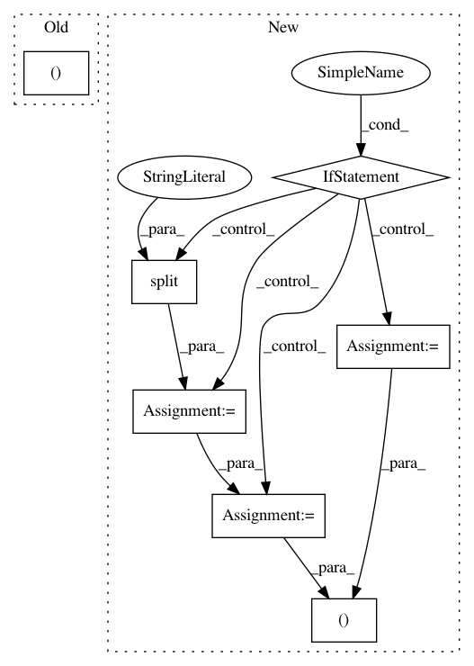

441a175deaa5812c086cdb8a3939d51d39f5a7ae,nussl/deep/train/trainer.py,Trainer,setup_loss,#Trainer#Any#Any#,89
Before Change
def setup_loss(self, loss_functions, output_target_map):
self.output_target_map = output_target_map
self.loss_dictionary = {
target: (loss_functions[fn.upper()].value(), float(weight))
for (fn, target, weight)
in self.options["loss_function"]
}
self.loss_keys = sorted(list(self.loss_dictionary))
After Change
self.output_target_map = output_target_map
self.loss_dictionary = {}
for (_fn, target, weights) in self.options["loss_function"]:
if "PIT" in _fn.upper():
loss_fn = _fn.split(":")[1]
loss_fn = loss_functions[loss_fn.upper()].value()
fn = loss_functions["PIT"].value(loss_fn)
else:
fn = loss_functions[_fn.upper()].value()
self.loss_dictionary[target] = (fn, float(weights))
self.loss_keys = sorted(list(self.loss_dictionary))
@staticmethod
def build_model(model):
In pattern: SUPERPATTERN
Frequency: 3
Non-data size: 7
Instances
Project Name: interactiveaudiolab/nussl
Commit Name: 441a175deaa5812c086cdb8a3939d51d39f5a7ae
Time: 2020-01-26
Author: prem@u.northwestern.edu
File Name: nussl/deep/train/trainer.py
Class Name: Trainer
Method Name: setup_loss
Project Name: eth-cscs/reframe
Commit Name: 64445594489d29e36a9077622b3cbb012c99662a
Time: 2020-04-03
Author: maxime.boissonneault@calculquebec.ca
File Name: reframe/core/pipeline.py
Class Name: RegressionTest
Method Name: supports_system
Project Name: biolab/orange3
Commit Name: 8d4d199c35f5163ed21ae705a16ce3c8548d60c6
Time: 2012-11-28
Author: janez.demsar@fri.uni-lj.si
File Name: Orange/data/io.py
Class Name: BasketReader
Method Name: prescan_file